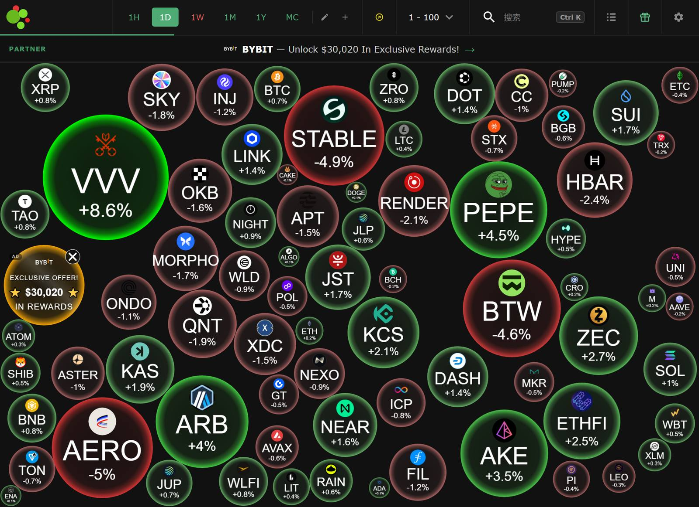

市场在任何时候都是一个投票机，而不是一个称重机。但长期来看，价格最终会回归价值。
| 资产 | 最新 | 当日涨跌 | 备注 |
|---|---|---|---|
| 上证指数 | 3,690.48 | +0.89% | 10/23 收盘；深V反转，成交约19,728亿元 |
| 深证成指 | 11,673.83 | +2.79% | 10/23 收盘；明显反弹 |
| 创业板指 | 2,684.10 | +4.16% | 10/23 收盘；成长股领涨，新能源/芯片午后拉升 |
| 恒生指数 | 23,093.37 | +0.69% | 10/23 收盘；恒生科技+2.05%，科技板块止跌反弹 |
| 日经225 | 62,693.16 | -0.34% | 10/23 收盘；KOSPI +0.30% 报5,550.30 |
| 道琼斯 | 52,215.16 | -1.23% | 10/23 收盘；本周累涨0.41% |
| 标普500 | 7,623.68 | -0.52% | 10/23 收盘；本周累跌0.47% |
| 纳斯达克 | 25,955.34 | -0.21% | 10/23 收盘；本周累跌0.71% |
| 德国DAX | — | -1.07% | 10/23 收盘；欧洲股指普跌，法国CAC40 -1.39% |
| COMEX黄金 | 4,039.80美元/盎司 | -2.66% | 10/22 收盘；金价暴跌考验4,000关口 |
| COMEX白银 | 54.63美元/盎司 | -5.34% | 10/22 收盘；白银跌幅大于黄金 |
| WTI原油 | 99.95美元/桶 | +2.39% | 10/23 收盘；布伦特$114.45（+1.35%） |
| 美10Y / 30Y国债 | 4.965% / 5.30% | — | 10/23；10Y跌破5%创一个月新低，30Y -10bp |
| 美元指数 / 离岸人民币 | 101.61 / 6.6721 | -0.18% | 10/22 收盘；离岸人民币创三年半新高 |
| BTC（加密风向标） | $81,520 | -0.75% | 10/24 实时；24h 区间 $80,700–82,600 |
| 资产 | 最新 | 4H | 1D | 7D | 备注 |
|---|---|---|---|---|---|
| Bitcoin (BTC) | $81,520 | ↓ -0.42% | ↓ -0.75% | ↓ -1.56% | 24h 区间 $80,700–82,600；支撑 $80,000，阻力 $82,500；BTC 占比 ≈58.7% |
| Ethereum (ETH) | $2,436 | ↓ -0.35% | ↓ -0.50% | ↓ -4.49% | Gas 0.04–0.05 Gwei 极低；ETH ETF 赎回速度为 BTC 6 倍以上 |
| Solana (SOL) | $102.52 | ↓ -0.08% | ↓ -0.08% | ↓ -12.84% | Alpenglow升级已激活（10/21）；SOL ETF 连续流出 |
| 全市场总市值 | $2.84万亿 | CoinGecko 10/24 快照 | BTC 占比 58.7%，ETH 占比 11.1% | ||
| 恐惧贪婪指数 | 59 | Alternative.me 10/24（Greed | 前日 59、较前期高位降温 | ||

| 事件 | 领先选项 | 当前概率 | 总成交量 | 备注 |
|---|---|---|---|---|
| 💵 宏观 / 政策 | ||||
| 美联储 10/27-28 FOMC 维持利率不变 | Yes | ~85% | $45.2M+ | 市场定价10月按兵不动为主流；野村维持不加息基准预测 |
| 美联储 10/27-28 FOMC 加息 25bp | Yes | ~55% | 同上 | 加息概率有所上升但仍有分歧；选举年因素支撑按兵不动 |
| 美联储 12/8-9 FOMC 累计加息 25bp | Yes | ~74% | — | 12月成为主战场；全年降息0次概率97% |
| 🪙 加密价格 | ||||
| BTC 10月内触及 $85,000 | Yes | ~70% | — | 现价$81,520距目标约$3,480；概率较10/19的80%有所回落 |
| BTC 10月内触及 $87,500 | Yes | ~40% | $277K | 较10/19的50%继续回落；剩余时间有限 |
| BTC 2026年底前触及 $90,000 | Yes | ~60% | — | 年底$100K仅约27% |
| BTC 10月内跌至 $80,000 | Yes | ~60% | — | 现价距$80K仅约$1,520；下行风险仍存 |
| 🏛 政治 / 选举 | ||||
| 2026 众议院控制权 | 民主党 | 90% | $1,840万 | 共和党10% |
| 2026 参议院控制权 | 民主党 | 64% | $710万 | 共和党36% |
| 民主党横扫参众两院 | Yes | 62% | — | 分裂国会28% / 共和党横扫8% |
| 🌍 其他热点 | ||||
| 美国中期选举 11/3 | — | — | — | 距今约10天；政策不确定性即将缓解 |
| 2028 美国总统大选民主党候选人 | — | — | $2.7亿+ | 全站成交量Top3合计占57%以上 |
| 资产 | 赛道 | 当前价格 | 1D | 备注 |
|---|---|---|---|---|
| 🔴 第一层 · 每天必看（宏观6项见板块二：Nasdaq、S&P500、BTC、Gold、DXY、US10Y） | ||||
| 英伟达 (NVDA) | AI 芯片 | $210.96 | ↓ -0.59% | 10/23收盘；市值"股王"一度被AAPL短暂超越 |
| 台积电(ADR) (TSM) | 晶圆代工 | — | ↓ -4.52% | 10/22收盘；费半暴跌日 |
| SK hynix (SK海力士) | HBM | — | ↑ +4.41% | 10/23韩股收盘；从跌超4%翻红，Solidigm停止IPO减轻融资压力 |
| 超威半导体 (AMD) | AI 芯片 | — | ↓ -8.10% | 10/22收盘；费半暴跌日重挫 |
| 博通 (AVGO) | AI 芯片/网络 | — | ↓ -4.31% | 10/22收盘 |
| 特斯拉 (TSLA) | Robotaxi | — | ↓ -3%+ | 10/22收盘；Q3财报后市场关注汽车毛利率 |
| 微软 (MSFT) | 云/AI | — | ↑ +0.66% | 10/23收盘；相对抗跌 |
| 谷歌-A (GOOGL) | 云/AI | — | ↓ -1.08% | 10/23收盘 |
| 苹果 (AAPL) | 消费电子 | — | ↓ -0.14% | 10/23收盘；盘中市值一度超越NVDA |
| 🟠 第二层 · 主线确认 | ||||
| 美光科技 (MU) | 存储 | — | ↑ +2%+ | 10/23收盘；存储板块逆势走高 |
| 超微电脑 (SMCI) | 服务器 | — | ↓ | 10/22暴跌日重挫 |
| GE Vernova (GEV) | 电力设备 | — | — | 防御性板块，跌幅最小 |
| 瑞致达 (VST) | 独立电力 | — | — | 防御性板块 |
| 星座能源 (CEG) | 核电 | — | — | 核电/清洁基荷最稳定环节 |
| 寒武纪 (688256.SH) | 国产AI芯片 | ¥932.20 | ↑ +5.46% | 10/23收盘；午后反攻领涨 |
| 海光信息 (688041.SH) | 国产CPU/DCU | ¥201.10 | ↑ +5.28% | 10/23收盘；深V反转 |
| 北方华创 (002371.SZ) | 半导体设备 | ¥537.49 | ↓ -0.83% | 10/23收盘；早盘跌3.97%后收窄 |
| 中微公司 (688012.SH) | 半导体设备 | ¥266.70 | ↑ +0.95% | 10/23收盘；午后翻红 |
| 中芯国际 (688981.SH) | 晶圆代工 | — | ↑ | 10/23收盘；早盘跌超4%后翻红 |
| 🟡 第三层 · 高弹性交易 | ||||
| Meta (META) | 社交/AI | — | ↓ | 10/22暴跌7%；10/23续跌；巨额AI资本支出引发担忧 |
| 汇川技术 (300124.SZ) | 工控/机器人 | — | ↑ +6%+ | 10/23收盘；机器人概念领涨 |
| 三花智控 (002050.SZ) | 机器人/热管理 | ¥35.08 | ↑ +6.66% | 10/23收盘；成交额31.27亿 |
| 绿的谐波 (688017.SH) | 机器人减速器 | — | ↑ +13% | 10/23收盘；机器人概念涨幅榜首 |
| 宁德时代 (300750.SZ) | 动力电池 | ¥237.60 | ↑ | 10/23收盘；10笔大宗交易 |
| 比亚迪 (002594.SZ) | 新能源车 | — | ↑ | 10/23收盘；随大盘反弹 |